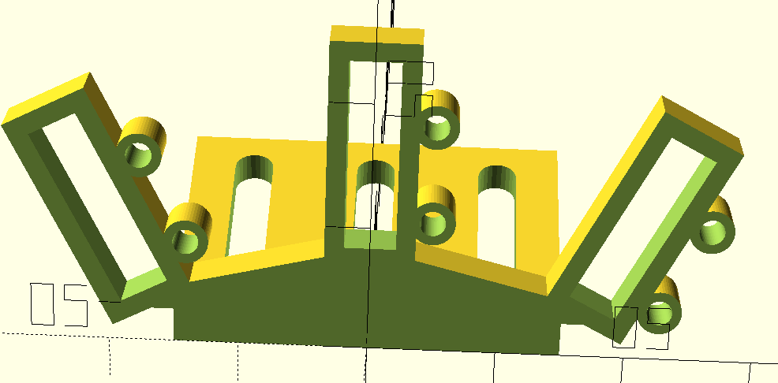

Robot writes with its feet
2020-05-24
Last week it was demonstrated how naminukas can act as 4DOF pick and place arm. This week I finished making a detachable tool mechanism. Goal was to allow robot arm to use different tools without adding any additional actuators to minimise complexity. Idea was to exploit the fact that in many cases robot arms don't utilise their full possible workspace. Putting tools in these "unused" areas allows robot arm itself to be used as actuator to attach/detach tool to arm.
I experimented with various sliding, snapping and magnetic ways to attach tool to arm and came up with a hybrid sliding and magnetic design. Here is a demonstration of mechanism in action:
While detachable tool mechanism was made specifically for naminukas it is generic enough to be applied to any robot arm so I will explain in more details how it works:
-
Tool holder contains a simple flat rectangular magnet and 2
pins on one side:
Above is a holder for 3 tools. Magnets are not shown. Pins are made of screws screwed into round holes. Long holes at the back are used to attach tool holder to arm.
-
Tool also contains a flat rectangular magnet but on one side of
magnet holding frame there is a little rise/rail which can
slide into corresponding depression on the arm:
Hole at the right is for a magnet. Hole at the left is to camp a tool.
-
Arm has a flat magnet and a depression for tool to be slid into:
In this case arm is foot and wheel at the same time. One side to rail has wider opening for tool to slide easier in case of misalignment.
- Pins on tool holder and arm on the same side but interleaving meaning that arm can pass tool holder without touching it. Function of the pins is to move tool far enough so that tool magnet deterministically attracts more either holder or arm. To take tool, arm approaches from pin side, pushes tool to other side with arm pins and then retracts with tool stuck to arm. To return tool, arm approaches from pinless side and then pins of holder retain tool as arm moves further to side with pins. This mechanism would work even if tool and arm would not have a little rail ridges. Rail function is not to help take/return function but to keep tool in arm with a greater force than magnet could do. Technically magnets are not needed. Adding rail to holder side and using either friction of some snapping pins would work too but it would require good precision while magnet auto centres itself and is compliant.
All parts were printed in PLA. Magnets used are 4x4x15mm. They are held in place by friction by precise sizing of the holes. As mentioned above pins are made of random screws laying around the house:
Getting arm/foot to pick and return tool reliably took quite a few trial and error cycles. These are all 3D printed parts which didn't work as expected:

- Previously:
- 4DOF pick and place arm
- Read next:
- Hanging from the ceiling